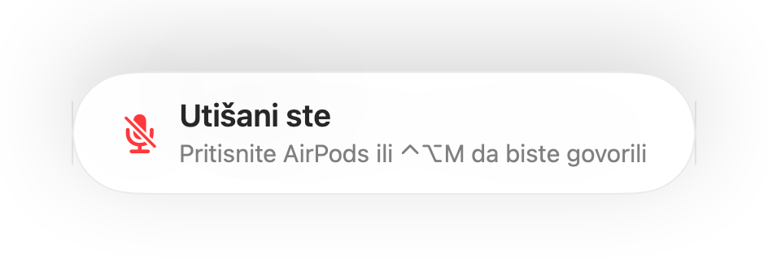

Podsjetnik „Utišani ste” za svaki poziv i sastanak
Zoom vas upozorava kada govorite dok je mikrofon utišan. Većina drugih aplikacija to ne radi, a pozivi u pregledniku gotovo nikada. Objašnjavate nešto cijelu minutu i tek tada primijetite da vas svi čekaju.
Muffle prepoznaje govor dok je mikrofon utišan i prikazuje podsjetnik u bilo kojoj aplikaciji. Kada se u pozivu upotrebljavaju AirPods ili slušalice s mikrofonom, Muffle osluškuje ugrađeni mikrofon Maca, i to samo njegovu glasnoću. Ništa se ne snima.
Uključite podsjetnik
- 1
Instalirajte Muffle i dopustite pristup mikrofonu.
- 2
Provjerite je li u izborniku Postavke Muffle uključena opcija „Podsjeti me kada govorim dok je mikrofon utišan”.
- 3
Pridružite se pozivu uz AirPods ili slušalice i utišajte mikrofon.
- 4
Počnite govoriti. Prikazat će se podsjetnik „Utišani ste”.

- Ulazite u poziv dok je mikrofon još utišan od prethodnog? Muffle vas podsjeća čim poziv započne.
- Tipkanje neće aktivirati podsjetnik. Aktivira ga isključivo govor.
Pitanja
Radi li podsjetnik s ugrađenim mikrofonom Maca?
Radi kada se u pozivu upotrebljavaju AirPods ili slušalice s mikrofonom. Ako poziv upotrebljava ugrađeni mikrofon Maca, taj je mikrofon utišan i ne može vas čuti.
Snima li se moj zvuk?
Ne. Muffle mjeri samo glasnoću i nikada ne pohranjuje niti šalje zvuk.